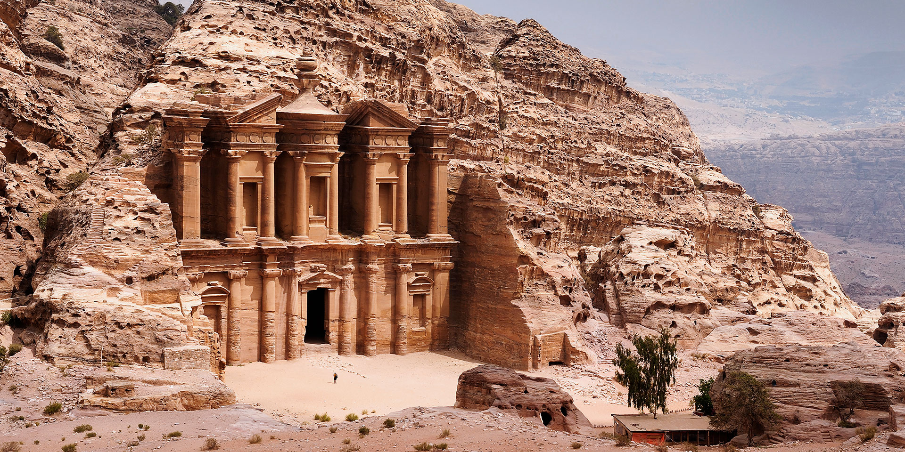
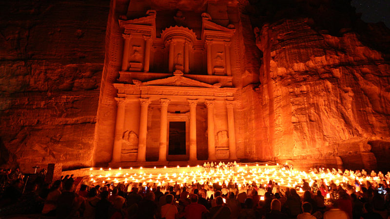

Kristaus Atpirkėjo statula
Petra
Petra (gr. „πέτρα“ reiškia „akmuo"; arab. البتراء Al-Batrāʾ) – archeologinė vietovė Jordanijoje, garsėjanti akmens statulomis, išskaptuotomis uolose apie 200 m. pr. m. e. Tai pamirštas nabatėjų miestas, dar vadinamas raudonąja dykumų rože. Uolose iškalti nuostabūs rūmai ir labai daug laiptuotų takų, vedančių į aukštus statinius.

Rausvas lyg rožė ir senas Petros miestas buvo Nabatėjų karalystės ir Romos imperijai priklausiusios Arabijos provincijos sostinė. Jis įsikūręs teritorijos, kadaise vadintos Transjordanija, pietuose. Tūnodamas kitapus Um el-Bijardos, šis miestas buvo sunkiai pasiekiamas, tačiau tokia geografinė padėtis leido tapti klestinčiu karavanų ir prekybos centru. Pro Petrą driekėsi Karalių kelias, jungiantis su Raudonąja jūra. Kiti keliai siejo miestą su Arabija, Tarpupiu (Mesopotamija) ir Viduržemio jūra. Senasis miestas glaudėsi prie kalnų grandinių.
Vienas geriausiai išsilaikiusių, į Siką atgręžtų pastatų – kapavietė, vadinama al Kaznė (iždas, lobynas). Pastato fasadas yra 40 m aukščio ir 26 m pločio, visas iškaltas iš uolos ir padalintas į du aukštus. Apatinio centras – portikas (atviras prieangis su kolonomis) su šešetu kolonų, iš kurių keturios stiebiasi abipus įeigos laiptelių. Tikromis kolonomis galima vadinti tik dvi vidurines (kairioji pastatyta iš naujo). Kitos keturios iš uolos išsikiša tik per tris ketvirtadalius savo skersmens.
